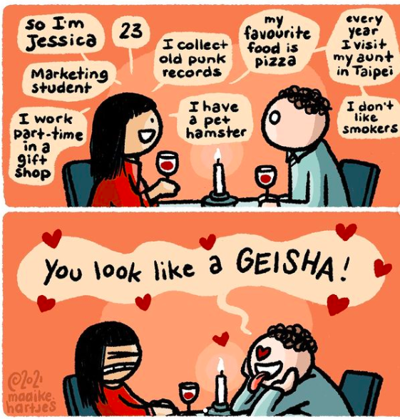

F-OICE-S
Centring Marginalised Voices
Seat at the Table
By Racky Westrik & Martika Avalon
SEAT AT THE TABLE, a concept by journalist Racky Westrik and photographer Martika Avalon, pays homage to those that have shaped Dutch societal culture. The book celebrates 25 black creatives and provides you with exclusive access to their private and professional chronicles.



The Mutually Constitutive Relationship Between Hypersexualisation and Racism
01 May 2021